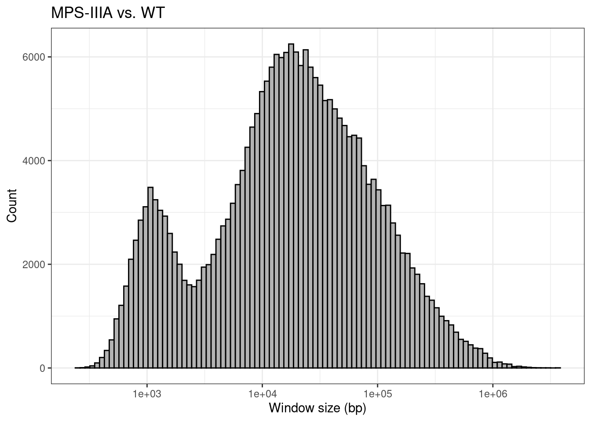

Last updated: 2023-03-16
Checks: 6 1
Knit directory: 2022_MPSIII_3mBrainRNAseq/
This reproducible R Markdown analysis was created with workflowr (version 1.7.0). The Checks tab describes the reproducibility checks that were applied when the results were created. The Past versions tab lists the development history.
The R Markdown is untracked by Git. To know which version of the R
Markdown file created these results, you’ll want to first commit it to
the Git repo. If you’re still working on the analysis, you can ignore
this warning. When you’re finished, you can run
wflow_publish to commit the R Markdown file and build the
HTML.
Great job! The global environment was empty. Objects defined in the global environment can affect the analysis in your R Markdown file in unknown ways. For reproduciblity it’s best to always run the code in an empty environment.
The command set.seed(20220423) was run prior to running
the code in the R Markdown file. Setting a seed ensures that any results
that rely on randomness, e.g. subsampling or permutations, are
reproducible.
Great job! Recording the operating system, R version, and package versions is critical for reproducibility.
Nice! There were no cached chunks for this analysis, so you can be confident that you successfully produced the results during this run.
Great job! Using relative paths to the files within your workflowr project makes it easier to run your code on other machines.
Great! You are using Git for version control. Tracking code development and connecting the code version to the results is critical for reproducibility.
The results in this page were generated with repository version 794a3ed. See the Past versions tab to see a history of the changes made to the R Markdown and HTML files.
Note that you need to be careful to ensure that all relevant files for
the analysis have been committed to Git prior to generating the results
(you can use wflow_publish or
wflow_git_commit). workflowr only checks the R Markdown
file, but you know if there are other scripts or data files that it
depends on. Below is the status of the Git repository when the results
were generated:
Ignored files:
Ignored: .Rproj.user/
Untracked files:
Untracked: analysis/dar-analysis_AB.Rmd
Untracked: data/dar-analysis/AB/
Unstaged changes:
Modified: analysis/dar-analysis_BC.Rmd
Note that any generated files, e.g. HTML, png, CSS, etc., are not included in this status report because it is ok for generated content to have uncommitted changes.
There are no past versions. Publish this analysis with
wflow_publish() to start tracking its development.
Load libraries and set global options.
suppressPackageStartupMessages({
## Common
library(tidyverse)
library(magrittr)
library(here)
library(AnnotationHub)
library(purrr)
library(scales)
library(kableExtra)
# library(tictoc) # Causes a bug in rowRanges()
library(ggrepel)
library(RColorBrewer)
library(ggpubr)
library(pander)
library(rmarkdown)
library(viridis)
## Project specific
library(VariantAnnotation)
library(Gviz)
library(zoo)
library(msigdbr)
library(readxl)
library(limma)
})if (interactive()) setwd(here::here())
theme_set(theme_bw())# By default Gviz expects UCSC chromosome names
# We're working with Ensembl so let's turn this off
options(ucscChromosomeNames = FALSE)This document contains the Differential Allelic Representation (DAR) analysis for the MPS-III A/B arm of the experiment.
ens_species <- "Danio rerio"
ens_release <- "101"
ens_assembly <- "GRCz11"Grab genome feature annotations for Danio rerio Ensembl release 101 (genome assembly GRCz11).
ah <- AnnotationHub() %>%
subset(species == ens_species) %>%
subset(rdataclass == "EnsDb")
ahId <- ah$ah_id[str_detect(ah$title, ens_release)]
ensDb <- ah[[ahId]]# Filter for primary chromosomes
chrInfo <- getChromInfoFromEnsembl(ens_assembly, release = ens_release) %>%
dplyr::filter(coord_system == "chromosome")
primary_chrs <- chrInfo$namegenes <- genes(ensDb, filter = SeqNameFilter(primary_chrs))
mcols(genes) <- mcols(genes)[
c("gene_id", "gene_name", "gene_biotype", "entrezid")
]Load and clean the sample metadata by renaming columns following
R naming conventions and setting categorical variables as
factors. Also append sample file basenames from a file I created
(data/sample_basenames.csv), as we will need these later.
This metadata contains information for all samples in the experiment, so
let’s filter for only samples in the A/B dataset.
expArm <- "AB"metadata <- read_xlsx(here("data/meta_final.xlsx")) %>%
dplyr::rename(
rin = RIN,
sex = Sex,
rna_batch = rnaBatch,
mps = MPS,
uln = ULN,
home_tank = `Home tank`,
dob = DOB,
death = Death
) %>%
mutate(
sex = as.factor(sex),
genotype = case_when(
genotype == "wt" ~ "WT",
genotype == "het" ~ "sgsh_het",
genotype == "naglu" ~ "MPSIIIB",
genotype == "sgsh" ~ "MPSIIIA",
genotype == "hgsnat" ~ "MPSIIIC"
),
genotype = as.factor(genotype),
home_tank = as.factor(home_tank)
) %>%
left_join(read_csv(here("data/sample_basenames.csv"))) %>%
dplyr::filter(mps == expArm) %>%
droplevels()metadata %>%
kable(
align = "l",
caption = "Sample metadata for the MPS-III A/B arm of the experiment"
) %>%
kable_styling(
bootstrap_options = c("striped", "hover", "condensed", "responsive")
)| sample | rin | sex | genotype | rna_batch | mps | uln | home_tank | dob | death | basename |
|---|---|---|---|---|---|---|---|---|---|---|
| AB1 | 9.3 | male | MPSIIIB | 2022-02-10 | AB | 22-00136 | AB_P1_lay1_tank2 | 2021-01-15 | 2021-04-22 | 22-00136_S1 |
| AB4 | 7.1 | female | MPSIIIA | 2022-02-10 | AB | 22-00138 | AB_P1_lay1_tank3 | 2021-01-15 | 2021-04-22 | 22-00138_S2 |
| AB11 | 7.9 | female | WT | 2022-02-10 | AB | 22-00145 | AB_P1_lay1_tank4 | 2021-01-15 | 2021-04-22 | 22-00145_S3 |
| AB13 | 7.8 | male | MPSIIIA | 2022-02-10 | AB | 22-00147 | AB_P1_lay1_tank2 | 2021-01-15 | 2021-04-22 | 22-00147_S4 |
| AB14 | 9.7 | female | sgsh_het | 2022-02-10 | AB | 22-00148 | AB_P1_lay1_tank2 | 2021-01-15 | 2021-04-22 | 22-00148_S5 |
| AB16 | 6.6 | female | WT | 2022-02-11 | AB | 22-00150 | AB_P1_lay1_tank2 | 2021-01-15 | 2021-04-22 | 22-00150_S6 |
| AB17 | 8.6 | female | WT | 2022-02-11 | AB | 22-00151 | AB_P1_lay1_tank2 | 2021-01-15 | 2021-04-22 | 22-00151_S7 |
| AB18 | 6.6 | male | sgsh_het | 2022-02-11 | AB | 22-00152 | AB_P1_lay1_tank2 | 2021-01-15 | 2021-04-22 | 22-00152_S8 |
| AB20 | 8.1 | female | MPSIIIB | 2022-02-11 | AB | 22-00153 | AB_P1_lay1_tank2 | 2021-01-15 | 2021-04-22 | 22-00153_S9 |
| AB21 | 9.5 | female | sgsh_het | 2022-02-11 | AB | 22-00154 | AB_P1_lay1_tank3 | 2021-01-15 | 2021-04-22 | 22-00154_S10 |
| AB22 | 8.1 | female | MPSIIIB | 2022-02-11 | AB | 22-00155 | AB_P1_lay1_tank3 | 2021-01-15 | 2021-04-22 | 22-00155_S11 |
| AB23 | 7.4 | female | MPSIIIA | 2022-02-11 | AB | 22-00156 | AB_P1_lay1_tank3 | 2021-01-15 | 2021-04-22 | 22-00156_S12 |
| AB24 | 7.1 | female | MPSIIIA | 2022-02-11 | AB | 22-00157 | AB_P1_lay1_tank3 | 2021-01-15 | 2021-04-22 | 22-00157_S13 |
| AB25 | 8.0 | female | sgsh_het | 2022-02-11 | AB | 22-00158 | AB_P1_lay1_tank3 | 2021-01-15 | 2021-04-22 | 22-00158_S14 |
| AB26 | 9.1 | female | MPSIIIB | 2022-02-11 | AB | 22-00159 | AB_P1_lay1_tank3 | 2021-01-15 | 2021-04-22 | 22-00159_S15 |
| AB27 | 9.6 | female | WT | 2022-02-11 | AB | 22-00160 | AB_P1_lay1_tank3 | 2021-01-15 | 2021-04-22 | 22-00160_S16 |
Set up colours for plotting by genotype. Going with a
colourblind-friendly palette (Set2) for best
accessibility.
genoCols <- metadata$genotype %>%
levels() %>%
length() %>%
brewer.pal("Set2") %>%
setNames(levels(metadata$genotype))Now define our samples that belong to each group (genotype). We will
use this later in the analysis when accessing relevant samples from the
VCF file.
samplesByGroup <- metadata %>%
split(f = .$genotype) %>%
sapply(function(x){
pull(x, basename)
}, simplify = FALSE)Load in the dgeList and topTables from
Karissa’s DE analysis.
topTables <- readRDS(here("data/R_objects/AB_toptab_cqn.rds"))Also pull the gene IDs for DE genes.
deGenes <- sapply(topTables, function(x){
dplyr::filter(x, DE) %>%
pull(gene_id)
}, simplify = FALSE)Variant data from the GVCF file is parsed into a
VCF class object using the VariantAnnotation
package. Note that this file is large and therefore does not exist in
the Git repository.
vcf_path <- file.path(
"/hpcfs/users/a1647910/2022_MPSIII_3mBrainRNAseq/code",
"analysis-variants_AB/results/09_variants/6_select/all_samples.vcf.gz"
)
svp <- ScanVcfParam(info = "", geno = c("GT", "GQ"))
vcf <- suppressWarnings({
readVcf(vcf_path, genome = genome(ensDb))
})A number of accessor functions exist for the VCF object.
We will use the following.
rowRanges(): Contains information from the CHROM,
POS, and ID fields of the VCF file. Returned as a GRanges
object. We will save this object to our rr
variable.
geno(): Contains data described in the FORMAT fields
of the VCF. Returned as a SimpleList. We will extract the
genotype information (GT) and save to the gt
variable.
rr <- rowRanges(vcf) %>%
plyranges::select(-paramRangeID)Below is a snippet of the rr data:
head(rr)GRanges object with 6 ranges and 4 metadata columns:
seqnames ranges strand | REF ALT
<Rle> <IRanges> <Rle> | <DNAStringSet> <DNAStringSetList>
1:6568_G/A 1 6568 * | G A
1:7028_A/G 1 7028 * | A G
1:7092_G/T 1 7092 * | G T
1:7330_T/A 1 7330 * | T A
1:9791_C/A 1 9791 * | C A
1:9815_G/A 1 9815 * | G A
QUAL FILTER
<numeric> <character>
1:6568_G/A 543.77 PASS
1:7028_A/G 39.54 PASS
1:7092_G/T 230.38 PASS
1:7330_T/A 163.61 PASS
1:9791_C/A 82.33 PASS
1:9815_G/A 189.80 PASS
-------
seqinfo: 993 sequences from GRCz11 genomegt <- geno(vcf)$GTThe genotype data contains phasing information where possible.
Phasing is indicated by the use of | as opposed to
/ for SNPs that are not phased. This information is not
required for DAR analysis and complicates downstream processing, so
let’s remove the phasing information and make all fields consistent.
unphase_gt <- function(x){
str_replace(x, "\\|", "\\/")
}
gt <- gt %>%
as.data.frame() %>%
mutate(across(everything(), unphase_gt))Below is a snippet of the gt data:
head(gt) 22-00136_S1 22-00138_S2 22-00145_S3 22-00147_S4 22-00148_S5
1:6568_G/A ./. ./. 1/1 ./. ./.
1:7028_A/G ./. ./. ./. ./. 0/0
1:7092_G/T ./. ./. ./. ./. ./.
1:7330_T/A ./. ./. ./. 1/1 ./.
1:9791_C/A 0/0 ./. 0/0 ./. 0/0
1:9815_G/A 0/1 ./. 0/1 ./. ./.
22-00150_S6 22-00151_S7 22-00152_S8 22-00153_S9 22-00154_S10
1:6568_G/A ./. ./. ./. ./. ./.
1:7028_A/G ./. ./. ./. ./. ./.
1:7092_G/T ./. ./. ./. 1/1 ./.
1:7330_T/A ./. ./. ./. 0/1 ./.
1:9791_C/A ./. 0/0 ./. ./. ./.
1:9815_G/A ./. ./. ./. ./. ./.
22-00155_S11 22-00156_S12 22-00157_S13 22-00158_S14 22-00159_S15
1:6568_G/A ./. 1/1 ./. ./. 1/1
1:7028_A/G ./. ./. 0/1 ./. ./.
1:7092_G/T ./. ./. 1/1 ./. ./.
1:7330_T/A 1/1 0/0 0/0 ./. ./.
1:9791_C/A 1/1 0/0 ./. ./. ./.
1:9815_G/A 1/1 0/0 ./. ./. ./.
22-00160_S16
1:6568_G/A 1/1
1:7028_A/G ./.
1:7092_G/T 1/1
1:7330_T/A ./.
1:9791_C/A ./.
1:9815_G/A ./.Genotypes are reported as numeric indices. 0 indicates
the reference allele, 1 is the first alternate allele,
2 is the second alternate allele, and so on. The reference
and alternate allele information is contained in our rr
object if ever required. However, for DAR analysis, we can work directly
with the indices as they are consistent across all samples for a single
variant position.
We aim to calculate a DAR metric at each suitable variant locus. This requires us to firstly summarise the genotype data into counts of the alleles reported at each variant locus.
## This code takes a while (~15mins) to execute
## So save as Rds file for quicker processing in future
alleleCounts_path <- file.path(
here("data/dar-analysis"),
expArm,
"alleleCounts.Rds"
)
if (!file.exists(alleleCounts_path)) {
if (!dir.exists(dirname(alleleCounts_path))) {
dir.create(dirname(alleleCounts_path), recursive = TRUE)
}
alleleCounts <- lapply(samplesByGroup, function(samples){
apply(gt[,samples], 1, function(gtInGroup){
alleles <- gtInGroup %>%
as.character() %>%
str_split("/") %>%
unlist()
tibble(
n_called = sum(alleles != "."),
n_nocall = sum(alleles == "."),
n_0 = sum(alleles == "0"),
n_1 = sum(alleles == "1"),
n_2 = sum(alleles == "2"),
n_3 = sum(alleles == "3")
)
}) %>%
bind_rows()
})
saveRDS(alleleCounts, alleleCounts_path)
} else {
alleleCounts <- readRDS(alleleCounts_path)
}Not all samples have genotype calls, so we normalise by converting
the allele counts into a proportion of total counts at each variant
locus. We also filter variant loci within each sample group with the
criterion number of called genotypes > number of missing genotypes.
Loci that do not satisfy this criterion have their proportions are
returned as NA’s, so that we can retain the object
structure and join it back to our rowRanges before removing
the filtered loci.
alleleProps <- lapply(alleleCounts, function(counts){
counts %>%
bind_rows() %>%
mutate(
across(
.cols = c("n_0", "n_1", "n_2", "n_3"),
.fns = ~ ifelse(n_called > n_nocall, .x / n_called, NA)
)
) %>%
dplyr::select(-n_called, -n_nocall) %>%
set_colnames(str_replace(colnames(.), "n_", "prop_"))
})Now that we have normalised values of allelic representation at each variant locus within our sample groups, we can calculate the DAR metric between groups. Firstly, we manually define our contrasts of interest.
contrasts <- makeContrasts(
A_vs_WT = MPSIIIA - WT,
B_vs_WT = MPSIIIB - WT,
het_vs_WT = sgsh_het - WT,
levels = names(alleleProps)
)Also choose the number of variant loci to define our elastic window size for smoothing the DAR metric. This needs to be an odd number, as we need to include the variant position and an equal number of loci either side.
winSize <- 11With a chosen elastic window size of 11 variants, this will smooth the DAR metric at each locus with the DAR values of the 5 loci either side. Note that for loci at the ends of each chromosome, the window size will be slightly smaller to avoid including DAR values from other chromosomes.
Now we calculate the Euclidean distance between normalised allelic
representation of the contrasted sample groups. Any variant loci that
were previously filtered due to not containing enough genotype
information are returned as NA, which we can now remove. We
convert the Euclidean distance to the DAR metric by dividing by \[\sqrt{2}\], resulting in an
easy-to-interpret value between 0 and 1, where 0 represents identical
allelic representation and 1 represents complete diversity. Lastly we
smooth the DAR values as described above.
## This code takes a while (~7mins) to execute
## So save as Rds file for quicker processing in future
DAR_path <- file.path(
here("data/dar-analysis"),
expArm,
"DAR.Rds"
)
if (!file.exists(DAR_path)) {
if (!dir.exists(dirname(DAR_path))) {
dir.create(dirname(DAR_path), recursive = TRUE)
}
DAR <- apply(contrasts, 2, function(col){
## Grab the sample groups in each contrast
contrast <- col %>%
enframe(name = "group", value = "contrast") %>%
dplyr::filter(contrast != 0) %>%
pull(group)
stopifnot(length(contrast) == 2)
## Return the allele proportions for each sample group in each contrast
alleleProps[contrast]
}, simplify = FALSE) %>%
sapply(function(props){
## Calculate the Euclidean distance
dist <- vapply(seq(length(rr)), function(ind){
rbind(props[[1]][ind,], props[[2]][ind,]) %>%
dist() %>%
as.numeric()
}, numeric(1))
## Bind the calculated Euclidean distance to our rowRanges
rr %>%
plyranges::select(-everything()) %>%
as_tibble() %>%
mutate(dist = dist) %>%
## Remove any loci with NA DAR as this means they were filtered
## in at least one of the contrasted sample groups
dplyr::filter(!is.na(dist)) %>%
## Drop levels so we don't loop over chromosomes/scaffolds with no data
droplevels() %>%
## Split by chromosome to avoid including DAR values from multiple
## chromosomes when smoothing
split(f = .$seqnames) %>%
lapply(function(chr){
dplyr::mutate(
chr,
## sqrt(2) is the maximum dist
dar = dist / sqrt(2),
dar_smooth = rollapply(dar, width = winSize, mean, partial = TRUE),
win_start = lag(start, n = (winSize - 1) / 2),
win_end = lead(start, n = (winSize - 1) / 2),
## lag() and lead() will return NA if index is out of range,
## so let's adjust these
win_start = ifelse(is.na(win_start), start[1], win_start),
win_end = ifelse(is.na(win_end), start[nrow(chr)], win_end),
win_size = win_end - win_start
)
}) %>%
bind_rows() %>%
GRanges()
}, simplify = FALSE)
saveRDS(DAR, DAR_path)
} else {
DAR <- readRDS(DAR_path)
}Plotting the cumulative distribution of DAR by chromosome is useful to determine if the mutant chromosome is affected by high DAR values more so than other chromosomes.
Let’s first define a plotting function so we can apply it for each contrast.
plotCumDAR <- function(DAR, mutChr, title){
DAR %>%
split(seqnames(.)) %>%
lapply(function(chr){
tibble(
chromosome = as.vector(seqnames(chr)),
dar_smooth = chr$dar_smooth
)
}) %>%
purrr::reduce(rbind) %>%
mutate(
chromosome = factor(
chromosome,
# Draw mutant chr on top
levels = unique(c(
chromosome[chromosome != mutChr],
chromosome[chromosome == mutChr]
))
),
mutant_chromosome = chromosome == mutChr
) %>%
ggplot(aes(
x = dar_smooth,
group = chromosome,
colour = mutant_chromosome
)) +
stat_ecdf() +
scale_colour_manual(
values = c("red", "grey50"),
breaks = c("TRUE", "FALSE")
) +
labs(
title = title,
colour = "Mutant chromosome",
x = "DAR",
y = "F(DAR)"
)
}Now let’s see how DAR on the mutant chromosome compares to other chromosomes.
plotCumDAR(DAR$A_vs_WT, "22", "MPS-IIIA vs. WT")plotCumDAR(DAR$B_vs_WT, "24", "MPS-IIIB vs. WT")plotCumDAR(DAR$het_vs_WT, "22", "sghs/+ vs. WT")Define a GRanges object that contains the ranges of the
elastic sliding window. We will use this to assign DAR values to genes
for the range(s) they overlap.
winRanges <- lapply(DAR, function(x){
x %>%
as_tibble() %>%
dplyr::select(
seqnames, start = win_start, end = win_end, width = win_size, strand,
dar_smooth
) %>%
split(f = .$seqnames) %>%
## Extend the start and ends so that the whole chromosome is covered
lapply(function(chr){
seqname <- unique(chr$seqnames)
chr$start[1] <- 1
chr$width[1] <- chr$end[1] - chr$start[1]
last_ind <- nrow(chr)
chr$end[last_ind] <- chrInfo$length[chrInfo$name == seqname]
chr$width[last_ind] <- chr$end[last_ind] - chr$start[last_ind]
chr
}) %>%
bind_rows() %>%
GRanges()
})Let’s define another function to visualise the distribution of elastic window sizes.
plotWinRanges <- function(winRanges, title, bins = 100){
winRanges %>%
width() %>%
enframe(name = NULL, value = "winSize") %>%
ggplot(aes(winSize)) +
geom_histogram(
bins = bins,
colour = "black",
fill = "grey70"
) +
scale_x_log10() +
labs(
title = title,
x = "Window size (bp)",
y = "Count"
)
}plotWinRanges(winRanges$A_vs_WT, title = "MPS-IIIA vs. WT")
plotWinRanges(winRanges$B_vs_WT, title = "MPS-IIIB vs. WT")plotWinRanges(winRanges$het_vs_WT, title = "sgsh/+ vs. WT")We can visualise whether differentially expressed genes (DEG) may be prone eQTL artefacts by plotting the DAR values along a chromosomal axis and overlaying the position of DEGs. Let’s define a plotting function that we can easily use to select a chromosome and the genomic features of interest.
plotChrDAR <- function(
DAR, chromosome, features = GRanges(), foi = GRanges(),
darType = "b", highlight_features = TRUE,
title = ""
){
tracks <- list()
if (length(foi)) {
foi <- foi %>%
plyranges::filter(seqnames == chromosome) %>%
plyranges::mutate(symbol = gene_name)
foi_track <- GeneRegionTrack(
range = foi,
transcriptAnnotation = "symbol",
col = "white",
fill = "white",
showTranscriptId = TRUE,
fontcolor.group = "red",
cex.group = 0.6,
size = 0.5,
name = NULL
)
tracks <- append(tracks, foi_track)
}
axis_track <- GenomeAxisTrack(
add53 = TRUE,
add35 = TRUE,
name = paste0("Chr", chromosome),
showTitle = TRUE,
size = 1
)
if (length(foi)) {
axis_track <- HighlightTrack(
trackList = list(axis_track),
range = foi
)
}
tracks <- append(tracks, axis_track)
if (length(features)) {
features <- features %>%
plyranges::filter(seqnames == chromosome) %>%
plyranges::mutate(symbol = gene_name)
features_track <- AnnotationTrack(
range = features,
name = "DE",
shape = "box",
fill = "darkgray",
group = features$gene_name,
groupAnnotation = "group",
fontcolor.group = 1,
cex.group = 0.6,
size = 0.4
)
tracks <- append(tracks, features_track)
}
dar_track <- DAR[,"dar_smooth"] %>%
plyranges::filter(seqnames == chromosome) %>%
DataTrack(
type = darType,
name = "DAR",
size = 8,
window = -1,
windowSize = 1,
cex = 0.4,
col = "grey20",
col.axis = "black",
yTicksAt = seq(0, 1, 0.1),
ylim = c(0, 1)
)
if (highlight_features) {
if (all(length(features) & length(foi))) {
ranges <- c(features, foi)
} else if (length(features)) {
ranges <- features
} else if (length(foi)) {
ranges <- foi
} else {
ranges <- GRanges()
}
dar_track <- HighlightTrack(
trackList = list(dar_track),
range = ranges,
col = c(rep("#ffe0e0", length(features)), rep("red", length(foi))),
fill = c(rep("#ffe0e0", length(features)), rep("red", length(foi)))
)
}
tracks <- append(tracks, dar_track)
plotTracks(
trackList = tracks,
main = title,
cex.main = 1,
cex.title = 0.6,
col.title = "black",
background.title = "white"
)
}First let’s look at the mutant chromosome, as this was identified as having the highest average DAR from the cumulative distributions we plotted above.
plotChrDAR(
DAR = DAR$A_vs_WT,
chromosome = "22",
features = genes[genes$gene_id %in% deGenes$`MPS-IIIA`],
foi = genes[genes$gene_name == "sgsh"]
)And comparing this to a non-mutant chromosome:
plotChrDAR(
DAR = DAR$A_vs_WT,
chromosome = "1",
features = genes[genes$gene_id %in% deGenes$`MPS-IIIA`]
)The mutant chromosome also showed the highest average DAR in the MPS-IIIB vs. WT comparison.
plotChrDAR(
DAR = DAR$B_vs_WT,
chromosome = "24",
features = genes[genes$gene_id %in% deGenes$`MPS-IIIB`],
foi = genes[genes$gene_name == "naglu"]
)Interestingly we see a region of low DAR along the mutant chromosome, however no DEGs exist in these regions. It is likely that many of the genes classified as DE are eQTLs as they are found within regions of high DAR.
Again comparing to a non-mutant chromosome:
plotChrDAR(
DAR = DAR$B_vs_WT,
chromosome = "3",
features = genes[genes$gene_id %in% deGenes$`MPS-IIIB`]
)Assigning each gene within the dataset a DAR value is useful for
further analysis such as the weighting of gene rankings for GSEA. Let’s
do this now and save the resulting GRanges object for
further use.
assignDAR <- function(features, ranges){
overlaps <- findOverlaps(features, ranges)
lapply(unique(queryHits(overlaps)), function(query){
subjects <- subjectHits(overlaps)[queryHits(overlaps) == query]
dar <- ranges$dar_smooth[subjects] %>%
mean()
features[query,] %>%
as.data.frame() %>%
dplyr::mutate(dar = dar)
}) %>%
bind_rows() %>%
GRanges()
}## This code takes a while (~10mins) to execute
## So save as Rds file for quicker processing in future
geneDAR_path <- file.path(
here("data/dar-analysis"),
expArm,
"geneDAR.Rds"
)
if (!file.exists(geneDAR_path)) {
if (!dir.exists(dirname(geneDAR_path))) {
dir.create(dirname(geneDAR_path), recursive = TRUE)
}
geneDAR <- map2(topTables, winRanges, function(tt, wr){
features <- genes[genes$gene_id %in% tt$gene_id]
assignDAR(features, wr)
})
saveRDS(geneDAR, geneDAR_path)
} else {
geneDAR <- readRDS(geneDAR_path)
}topTables %>%
bind_rows() %>%
dplyr::filter(coef %in% c("MPS-IIIA", "sgsh/+")) %>%
dplyr::filter(chromosome == "22") %>%
droplevels() %>%
mutate(
chromosome = fct_relevel(
chromosome,
c("22", levels(chromosome)[levels(chromosome) != "22"]))
) %>%
dplyr::select(gene_id, logFC, coef) %>%
spread(key = "coef", value = "logFC") %>%
mutate(
DE = case_when(
gene_id %in%
intersect(deGenes$`MPS-IIIA`, deGenes$`sgsh/+`)
~ "both",
gene_id %in% deGenes$`sgsh/+`[!deGenes$`sgsh/+` %in% deGenes$`MPS-IIIA`]
~ "het only",
gene_id %in% deGenes$`MPS-IIIA`[!deGenes$`MPS-IIIA` %in% deGenes$`sgsh/+`]
~ "MPS-IIIA only",
TRUE ~ "not DE"
)
) %>%
left_join(as_tibble(geneDAR$`sgsh/+`)) %>%
ggplot(aes(x = `MPS-IIIA`, y =`sgsh/+`)) +
geom_point(
aes(fill = DE, size = dar),
colour = "black",
shape = 21,
alpha = 0.5
) +
geom_abline(slope = 1) +
geom_label_repel(
aes(label = gene_name),
nudge_y = 1,
data = . %>% dplyr::filter(gene_name == "sgsh")
) +
scale_x_continuous(limits = c(-5, 5)) +
scale_y_continuous(limits = c(-2.5, 5)) +
theme(aspect.ratio = 1) +
scale_fill_manual(values = brewer.pal(4, "Set2")) +
labs(size = "DAR") +
ggtitle("LogFC of genes on chromosome 22 in sgsh het vs hom ")
sessionInfo()R version 4.2.2 Patched (2022-11-10 r83330)
Platform: x86_64-pc-linux-gnu (64-bit)
Running under: Ubuntu 20.04.5 LTS
Matrix products: default
BLAS: /usr/lib/x86_64-linux-gnu/blas/libblas.so.3.9.0
LAPACK: /usr/lib/x86_64-linux-gnu/lapack/liblapack.so.3.9.0
locale:
[1] LC_CTYPE=en_AU.UTF-8 LC_NUMERIC=C
[3] LC_TIME=en_AU.UTF-8 LC_COLLATE=en_AU.UTF-8
[5] LC_MONETARY=en_AU.UTF-8 LC_MESSAGES=en_AU.UTF-8
[7] LC_PAPER=en_AU.UTF-8 LC_NAME=C
[9] LC_ADDRESS=C LC_TELEPHONE=C
[11] LC_MEASUREMENT=en_AU.UTF-8 LC_IDENTIFICATION=C
attached base packages:
[1] grid stats4 stats graphics grDevices utils datasets
[8] methods base
other attached packages:
[1] ensembldb_2.22.0 AnnotationFilter_1.22.0
[3] GenomicFeatures_1.50.4 AnnotationDbi_1.60.0
[5] limma_3.54.1 readxl_1.4.2
[7] msigdbr_7.5.1 zoo_1.8-11
[9] Gviz_1.42.1 VariantAnnotation_1.44.1
[11] Rsamtools_2.14.0 Biostrings_2.66.0
[13] XVector_0.38.0 SummarizedExperiment_1.28.0
[15] Biobase_2.58.0 GenomicRanges_1.50.2
[17] GenomeInfoDb_1.34.9 IRanges_2.32.0
[19] S4Vectors_0.36.1 MatrixGenerics_1.10.0
[21] matrixStats_0.63.0 viridis_0.6.2
[23] viridisLite_0.4.1 rmarkdown_2.20
[25] pander_0.6.5 ggpubr_0.6.0
[27] RColorBrewer_1.1-3 ggrepel_0.9.3
[29] kableExtra_1.3.4 scales_1.2.1
[31] AnnotationHub_3.6.0 BiocFileCache_2.6.1
[33] dbplyr_2.3.0 BiocGenerics_0.44.0
[35] here_1.0.1 magrittr_2.0.3
[37] lubridate_1.9.2 forcats_1.0.0
[39] stringr_1.5.0 dplyr_1.1.0
[41] purrr_1.0.1 readr_2.1.4
[43] tidyr_1.3.0 tibble_3.1.8
[45] ggplot2_3.4.1 tidyverse_2.0.0
loaded via a namespace (and not attached):
[1] utf8_1.2.3 tidyselect_1.2.0
[3] RSQLite_2.3.0 htmlwidgets_1.6.1
[5] BiocParallel_1.32.5 munsell_0.5.0
[7] codetools_0.2-19 interp_1.1-3
[9] withr_2.5.0 colorspace_2.1-0
[11] filelock_1.0.2 highr_0.10
[13] knitr_1.42 rstudioapi_0.14
[15] ggsignif_0.6.4 labeling_0.4.2
[17] git2r_0.31.0 GenomeInfoDbData_1.2.9
[19] farver_2.1.1 bit64_4.0.5
[21] rprojroot_2.0.3 vctrs_0.5.2
[23] generics_0.1.3 xfun_0.37
[25] biovizBase_1.46.0 timechange_0.2.0
[27] R6_2.5.1 bitops_1.0-7
[29] cachem_1.0.6 DelayedArray_0.24.0
[31] assertthat_0.2.1 vroom_1.6.1
[33] promises_1.2.0.1 BiocIO_1.8.0
[35] nnet_7.3-18 gtable_0.3.1
[37] workflowr_1.7.0 rlang_1.0.6
[39] systemfonts_1.0.4 splines_4.2.2
[41] rtracklayer_1.58.0 rstatix_0.7.2
[43] lazyeval_0.2.2 dichromat_2.0-0.1
[45] plyranges_1.18.0 broom_1.0.3
[47] checkmate_2.1.0 BiocManager_1.30.20
[49] yaml_2.3.7 abind_1.4-5
[51] backports_1.4.1 httpuv_1.6.9
[53] Hmisc_4.8-0 tools_4.2.2
[55] ellipsis_0.3.2 jquerylib_0.1.4
[57] Rcpp_1.0.10 base64enc_0.1-3
[59] progress_1.2.2 zlibbioc_1.44.0
[61] RCurl_1.98-1.10 prettyunits_1.1.1
[63] rpart_4.1.19 deldir_1.0-6
[65] cluster_2.1.4 fs_1.6.1
[67] data.table_1.14.8 ProtGenerics_1.30.0
[69] hms_1.1.2 mime_0.12
[71] evaluate_0.20 xtable_1.8-4
[73] XML_3.99-0.13 jpeg_0.1-10
[75] gridExtra_2.3 compiler_4.2.2
[77] biomaRt_2.54.0 crayon_1.5.2
[79] htmltools_0.5.4 later_1.3.0
[81] tzdb_0.3.0 Formula_1.2-4
[83] DBI_1.1.3 rappdirs_0.3.3
[85] babelgene_22.9 Matrix_1.5-3
[87] car_3.1-1 cli_3.6.0
[89] parallel_4.2.2 pkgconfig_2.0.3
[91] GenomicAlignments_1.34.0 foreign_0.8-84
[93] xml2_1.3.3 svglite_2.1.1
[95] bslib_0.4.2 webshot_0.5.4
[97] rvest_1.0.3 digest_0.6.31
[99] cellranger_1.1.0 htmlTable_2.4.1
[101] restfulr_0.0.15 curl_5.0.0
[103] shiny_1.7.4 rjson_0.2.21
[105] lifecycle_1.0.3 jsonlite_1.8.4
[107] carData_3.0-5 BSgenome_1.66.3
[109] fansi_1.0.4 pillar_1.8.1
[111] lattice_0.20-45 KEGGREST_1.38.0
[113] fastmap_1.1.0 httr_1.4.4
[115] survival_3.5-3 interactiveDisplayBase_1.36.0
[117] glue_1.6.2 png_0.1-8
[119] BiocVersion_3.16.0 bit_4.0.5
[121] stringi_1.7.12 sass_0.4.5
[123] blob_1.2.3 latticeExtra_0.6-30
[125] memoise_2.0.1